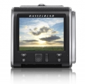

无忌
器材库
全部器材
产品年表
名词百科
榜单
器材库
> 数码后背 > 哈苏 CFV-50C

哈苏
哈苏 CFV-50C
分类
数码后背
点评
0 条
图片
0 张
评测
0 篇
专门给V系列使用的后背CFV-50c，定价为11,000欧元，约合人民币92367元。5000万像素CMOS，最长曝光时间为12分钟，另外可用软件Phocus 进行远端操作。
产品类型
数码后背
综合评分
暂无评分
无忌评测
暂无评测
规格参数
网友点评
(0)
产品图 / 样片
(0)
评测文章
(0)
基本参数
发布日期
2014-07-21
厂家推荐价格
11,000.00 （欧元）
影像技术
影像传感器
CMOS
有效像素
5000万
影像传感器尺寸
43.8 x 32.9mm
画幅比
4:3
存储
存储卡
CF
曝光控制
ISO感光度
ISO 100 - ISO 6400
备注
软件
可用软件Phocus 进行远端操作
附件
可使用PM90和PME90取景器
该产品暂无存档的网友点评
该产品暂无存档的产品图
评测 / 相关文章
该产品暂无存档的评测文章
相关文章
［资讯］V系列专用 哈苏发布CFV-50C数码后背
（原站已下线）
［资讯］哈苏CFV-50C数码后背
（原站已下线）